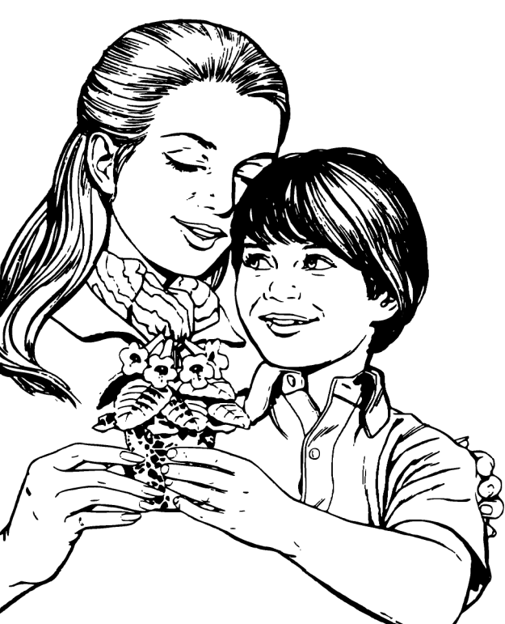

La fête des mères

La fête des mères est pour chacun l’occasion d’honorer celle qui nous a donné la vie et qui nous a comblé de sa tendresse depuis nos tous premiers moments de vie.
S’il est de coutume d’entourer nos mamans par notre présence et de leur offrir divers cadeaux pour témoigner de notre gratitude et de notre affection, combien plus il est important de prier pour elles !
En effet, les mères sont celles qui sans cesse s’inquiètent concernant le bien-être et le bonheur de leurs enfants ! Elles se tourmentent avec la même intensité avec laquelle ils sont tourmentés, et participent de la même manière à leurs joies. Les paroles du pape François sont significatives lorsqu’il dit : “les mères se « partagent », à partir du moment où elles portent un enfant pour le mettre au monde et l’élever”. Par ces mots, il définit clairement la nature même d’une mère : c’est une personne qui renonce à elle-même afin de donner la vie et de prendre soin de son enfant, pour toujours, en s’appropriant ses joies et ses douleurs.
La fête des mères est l’occasion pour nous, croyants, de prier pour notre maman, ainsi que pour toutes les femmes qui donnent la vie. Prions pour qu’à l’image de la Sainte Vierge, nos mamans soient comblées du Saint-Esprit et qu’elles nous conduisent les enfants que le Seigneur leur donne sur le chemin de la foi et de la sainteté !
Célébration d’Au revoir
Vous savez tous maintenant que notre évêque, Mgr Guy Boulanger, a été nommé archevêque de Sherbrooke. Avant son départ, nous désirons lui dire « Au revoir » et lui manifester notre reconnaissance pour ce qu’il a été comme Pasteur de notre Église diocsaine. Cette célébration d’Au revoir aura lieu au cours d’une Eucharistie présidée par Mgr Boulanger, à la cathédrale d’Amos, le mercredi 27 mai, à 19 heures.
Exposition Miracles eucharistiques
Nous aurons le privilège de recevoir l’exposition « Les Miracles eucharistiques dans le monde » les 23 et 24 mai prochain en notre église. Cette exposition a été conçue et réalisée par Saint Carlos Acutis et est présentée par Mme Louise Normandeau.
Adolescent des années 2000, génie de l’informatique, et passionné de l’Eucharistie, Carlos est décédé en 2006, à l’âge de 15 ans, d'une leucémie foudroyante. Il a eu une vie inspirante, et fut béatifié en 2020 par le Pape François, et canonisé en 2025 par le Pape Léon XIV.
Samedi 23 mai :
Dimanche 24 mai :
14h00 - 16h00
19h00 - 20h00
14h30 - 16h00
Le Chapelet en ce mois de Marie
Quand tu portes ton chapelet sur toi, Satan a mal à la tête. Quand tu le touches, il perd l’équilibre. Quand tu dis ton chapelet, il perd connaissance. Disons notre chapelet fréquemment, pour qu’il perde connaissance continuellement ; peut-être qu’un jour il aura une crise cardiaque et ne pourra plus travailler. Contribuons à hâter le triomphe de Maman Marie en ce mois de notre Bonne Mère.
Faisons connaître à nos amis priants ce court texte et nous constaterons comment l’Esprit-Saint travaille. Il y a beaucoup à gagner, rien à perdre ! Imaginons ce qui pourrait arriver si tous les catholiques du monde disaient leur chapelet tous les jours.
L’Équipe de la Joie
Notre mission est d’apporter de la joie aux personnes de notre entourage, surtout celles qui sont seules ou malades, par des visites, des appels téléphoniques, en soulignant les fêtes et toutes initiatives pour contrer l’isolement de nos aînés. Nous avons besoin de bénévoles pour remplir ce mandat.
Si vous êtes intéressé(e)s à joindre l’Équipe de la Joie, vous pouvez donner votre nom au secrétariat au 819-737-2045 ou encore le 819-737-4667. Merci !
Campagne de capitation 2026
Afin de garder notre Église bien vivante, votre don est une façon de la conserver au niveau financier pour s’assurer un lieu de culte accueillant et sécuritaire.
Vous pouvez faire vos dons via la Poste en les adressant à
La Fabrique St-Paul, 700, 8e Avenue, Senneterre, J0Y 2M0
ou en vous rendant au secrétariat de la Fabrique.
Heures d’ouverture
du secrétariat
Lundi, mercredi
et vendredi :
9h30 à 13h00

Revenus du 13 au 26 avril
- Quêtes554,40
- Prions en Église34,75
- Lampions88,55
- Capitation517,22
Mois de Marie
Le mois de mai est le mois de Marie, et lors de ce mois il y aura récitation du chapelet du lundi au samedi à 14h30, et le dimanche à 15h30 avant la messe.
Agenda liturgique
du 3 au 17 mai 2026 |
Dim
3 | | 10h30 | Messe à Lebel-sur-Quévillon | | 16h00 | | Messe : | Défunts des membres des Filles d’IsabelleFilles d’Isabelle, cercle Pacelli
Denise et Gérard Trottier |
|
|
Lun
4 | |
Mar
5 | | 15h00 | | Messe : | Marcel AyotteCollecte au service
À La Maisonnée |
|
|
Mer
6 | |
Jeu
7 | |
Ven
8 | | 15h00 | | Messe : | Georges-Édouard TremblayDenise Gagnon |
| | | Pas de prière d’adoration aujourd’hui |
|
Sam
9 | |
Dim
10 | | | Fête des mères | | 9h30 | Messe à La Morandière | | 11h00 | Messe à Barraute | | 16h00 | | Messe : | Madeleine TremblaySon fils, ses frères et ses sœurs |
|
|
Lun
11 | |
Mar
12 | |
Mer
13 | | 14h00 | | Messe : | Marie-Anne Tremblay GagnonSon petit-fils
À la résidence l’Îlot d’Or |
|
|
Jeu
14 | |
Ven
15 | | 15h00 | | Messe : | Sonia, Gilles, Rollande GuillemetteDenise |
| | 19h00 | Prière d’adoration |
|
Sam
16 | |
Dim
17 | | 10h30 | Messe à Lebel-sur-Quévillon | | 16h00 | | Messe : | Fernande et famille Lafontaine |
|
|